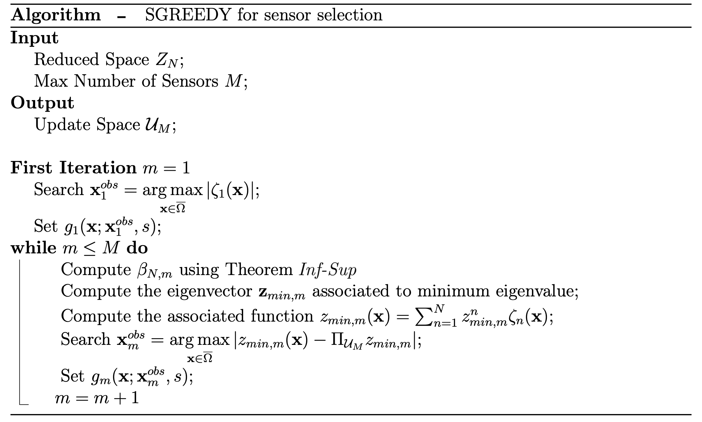

PBDW - Parameterised-Background Data-Weak formulation
Contents
PBDW - Parameterised-Background Data-Weak formulation#
The Parameterised-Background Data-Weak (PBDW) was introduced in [17] as a practical algorithm to general variational data assimilation
It has been shown in [25] that this can be written as a weak formulation to be later converted into a linear system of small dimension. The state estimation can be written as a linear combination in the following way
in which the first summation represents the correction term related to the measurements, whereas the latter is the part arising from the reduced basis approximation of the snapshots space. The coefficients are the solution of the following linear system
provided the following definitions: let \(A\in\mathbb{R}^{M\times M}\) and \(K\in\mathbb{R}^{M\times N}\) matrices, defined as
The algorithm is implemented in OpenFOAM, applied to scalar fields only, the details of the implemented version of the formulation can be found in [21].
There are 2 folders containing the offline and online phase of the algorithm.
ScalarPBDW_Offline
ScalarPBDW_Online
The PBDW is a general framework to combine data and mathematical models approximated through reduced basis techniques, hence it can accomodate different techniques to generate the basis functions and the basis sensors.
In this work, the default option is given by the couple WeakGreedy+SGREEDY, alternatevely the greedy procedure of GEIM is used.
WeakGreedy algorithm#
The rationale behind this algorithm is quite similar to the GEIM one, and the main difference between the two stands in the generation of the basis functions.
The first iteration starts by selecting the generating function
and the correspondent basis function as
Then the main loop, where \(2\leq M \leq M_{max}\), begins: the generating function is selected as the one maximizing the error
where \(z_i = \left(u, \zeta_i\right)_{L^2(\Omega)}\) and \(E_{M-1}\) is the reconstruction error at the \(M-\)th iteration. The generating function is later orthonormalized with respect to the basis, using the Gram-Schmidt procedure and accordingly the reduced space will be defined as
\(E_{M-1}\) may be replaced by a proper error estimator \(\Delta_{M-1}\geq E_{M-1}\), which allows a speed up of the calculations.
SGREEDY algorithm#
This algorithm maximizes the inf-sup constant \(\beta_{N,M}\) in a greedy manner [9, 14], the main difference with respect to GEIM is that this procedure works also for \(M>N\), hence we can place more sensors \(M\) than the number of basis function \(N\) used; furthermore SGREEDY is equivalent to GEIM are equivalent if \(M=N\). The details are reported in following algorithm.
{kind=link}